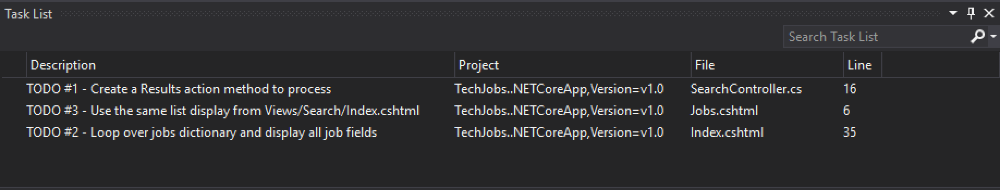

Assignment: TechJobs (MVC Edition)
Introduction
Your first task as an apprentice went well! You and Kathy built the TechJobs console prototype, and after demoing it to the Company Team at LaunchCode, the project has been green-lit to be fully built out as a web application.
The first step in this process will be to quickly develop a minimum viable product, or MVP. The goal is to get a functioning web app up and running with as little work as possible, so additional feedback and testing can be done early on in the development process. Then additional behind-the-scenes work will be carried out to fully develop the model and data side of the application.
After working with Kathy on the console demo, you'll be working with Eliot on this project. Here's a picture of Eliot:

Eliot was once a LaunchCode apprentice as well, so he knows just what it's like to be in your shoes. He's done some initial work on the project and left you some TODOs that he knows you can handle.
Learning Objectives
In this project, you'll show that you can:
- Read and understand code written by others
- Work within the controller and view portions of an MVC application
- Create new action methods to process form submission
- Use Razor syntax to display data within a view
TechJobs (MVC Edition)
You'll start with some code that Eliot has written to get you started. The idea behind your current assignment is to quickly deliver a functioning MVC application, so you'll focus on the controllers and views.
In order to do this, you'll be reusing the JobData class and job_data.csv file from the console app. You know you'll have to go back and rewrite the data portion of the application in the future, to make a true, database-backed model, but using the existing JobData class to provide some basic data functionality will let you focus on the views and controllers for now.
Your Assignment
Eliot has created an MVC application and filled in some features. It has controllers and views for a home page, along with functionality to display lists of data values for each column/field of the data (employer, location, etc). Eliot also started working on the search functionality, but only got as far as writing the code to display the search form.
He's handed it off to you to finish the rest. You'll add code to controllers and views to process and display search results, along with allowing users to see all jobs in the system via the List page.
Getting Started
Set up a local copy of the project:
- Visit the repository page for this project and fork the repository to create a copy under your own GitHub account.
- From within Visual Studio, choose the Team Explorer tab near the bottom of the Solution Explorer pane. If you don't see this tab, you can open it via the application menu: View > Team Explorer.
- Click on the Manage Connections icon (see below), and select Clone from the GitHub section of the Team Explorer and select your fork of the
TechJobsMVCrepository. Be sure to change the Path field to the location at which you would like the project to live, ideally inside of a folder - likelc101- that you've been using to store other projects.
- Open the solution via either the notification within Team Explorer or via File > Open > Project/Solution.
- Pop back over to the Solution Explorer to preview the code.
Go ahead and start up the application, so you can refer to both the code as well as the running app while we look at what's in place already.
The Model
The "model" is contained in the Models folder, in the JobData class. We put "model" in quotes, since this class isn't a model in the typical, object-oriented sense that we usually mean (maybe a better name for this assignment would be TechJobs VC!).
The JobData class is the exact same class that you used in the console app. The only modification is that Eliot changed the path to the job_data.csv file so that it could also be stored in the Models directory.
You'll use some of the static methods provided by JobData in your controller code. Since you're already familiar with these, we'll leave it to you to review their functionality as you go.
The Controllers
Expand the Controllers folder, and you'll see that you have three controllers already in place. Let's look at these one at a time.
HomeController
This class has only one action method, Index, which displays the home page for the app. We'll be primarily relying on default routing behavior, so this uses the Views/Index.cshtml template.
If you haven't already, go to the app's home page to see what this looks like.
ListController
This controller provides functionality for users to see lists of all values of a given data column: employer, location, skill, and position type. If you look at the corresponding page at /List you'll see there's also an "All" option presented. That one doesn't work yet; you'll fully implement that view in your work.
At the top of ListController is a special method known as a static constructor. This is probably the only place that we'll use one of these in this course, and all you need to understand for the purpose of this assignment is that it allows for static fields to be initialized without having to call a regular constructor (which would make a new object from the given class). We use it to populate columnChoices with values. This dictionary plays the same role as it did in the console app, which is to provide a centralized collection of the different list and search options presented throughout the user interface.
ListController also has Index, Values, and Jobs actions. The first of these simply displays the different types of lists that the user can view. The latter two display actual data obtained from JobData.
In the Values action, the controller uses the query parameter passed in as column to determine which values to fetch from JobData. In the case of "all" it will fetch all job data, and then render the Jobs.cshtml view template rather than the default view. In all other cases, it fetches only the values for the given column and passes them to the Values.cshtml view template. We'll explore these templates in a moment.
In the Jobs action, we take in two query parameters: column and value. This has the net result of working similarly to the search functionality, in that we are "searching" for a particular value with in a particular column and display jobs that match. However, this is slightly different from search in that the user will arrive at this action as a result of clicking on a link within one of our views, rather than via submitting a form. We'll see where these links originate when we look at the views. Also note that the Jobs action doesn't deal with an "all" scenario; it only displays jobs matching a specific value in a specific column.
The Views
Let's turn our attention to the views.
Shared/_Layout.cshtml
Open up the Views/Home/Index.cshtml file in Visual Studio, and in your browser navigate to the site's home page. You'll notice that there is a fair amount of markup visible on the page that isn't contained in Views/Home/Index.cshtml. This is because we're using Views/Shared/_Layout.cshtml to share the basic page layout and navigation across all of our templates. Have a look at Views/Shared/_Layout.cshtml, but know you won't have to do any work within this file for this assignment.
List Views
Turn your attention to Views/List/Index.cshtml. This template displays the list options, using data from the columnChoices dictionary passed in via ViewBag.columns. The only remarkable thing in this template is how we generate the links:
<a asp-controller="List" asp-action="Values"
asp-route-column="@column.Key">@column.Value</a>We've seen asp-controller and asp-action before, as attributes that cause the Razor engine to create links to the appropriate controller and action for us. The asp-route-* attribute is new though. This attribute will add a query parameter with key equal to whatever the third slot of the attribute name is. The * is a placeholder that we can replace with any valid identifier.
In Views/List/Index.cshtml, we specify a query parameter named column by using asp-route-column. The value of the query parameter is determined dynamically based on the value of @column.Key. Since these values come from ViewBag.columns in the template (which in turn comes from columnChoices in the controller), they will be employer, location, etc. When the user clicks on these links, they will be routed to the Values action in the List controller, which looks for these parameters.
In your browser, click on the Locations link. This sends a request as we just outlined, resulting in a list of all of the locations in the data set. The page you're seeing at /List/Values?column=location is generated by the Views/List/Values.cshtml template. It has a similar structure as Views/List/Index.cshtml, with the exception that the various links are presented in a table, and their URLs have not one, but two asp-route-* attributes: one for the column and one for the value. In the case of the locations list, these will result in URL paths like:
/List/Jobs?column=location&value=Kansas%20City(note that Razor inserts %20 for us, to represent a space).
Clicking on these links will display a list of jobs in the given location, via the Jobs action method. However, that display isn't working yet. While the action method is fully implemented, as we noted above, the view template needs some additional work.
Search View
Finally, click on Search from the home page, or the navigation bar, and open up Views/Search/Index.cshtml. You'll see a search form (in both the browser and template file) that gives the user the option of searching by a given column, or across all columns. This is an exact visual analog of our console application.
This template will be used to display search results, in addition to displaying the form. This will give the nice user experience of easily searching multiple times in a row.
Your Tasks
Once you understand the controllers and views that are already in place, you're ready to begin your work. In Visual Studio, select View > Task List to pop open a small pane at the bottom of the window. This list is populated by any code comments that start with TODO. In particular, you'll see your 3 tasks listed.

As you work on your tasks, refer to the demo app.
Add Results Action
Add a Results action method to SearchController. The method should take in two parameters, specifying the type of search and the search term. In order for the parameters to be properly passed in by the MVC framework, you'll need to name them appropriately, based on the corresponding form field names.
After looking up the search results via the JobData class, you'll need to pass them into the Views/Search/Index.cshtml view. Note that this is not the default view for this action.
You'll also need to pass ListController.columnChoices to the view, as is done in the Index method.
Display Search Results
After you have your Results action above passing data to the view, you need to display the data. Open up Views/Search/Index.cshtml and create a loop to display each job passed in from the controller. You should put each job in its own table, with job field per row.
Add the class "job-listing" to each of the tables to get some nice styling, courtesy of Eliot's work!
Display List of All Jobs
Recall that the page at the path /List/Values?column=all doesn't display any results. This page needs to display full job listings, just like the search results page. Add code to the appropriate view template so that this page displays jobs with the same structure as the search results.
Sanity Check
Before submitting, make sure that your application:
- Allows a user at
/Searchto search for jobs matching a specific search term, both within a specific column and across all columns. - Displays search results at the same URL as the search form.
- Displays jobs with alternately white and gray backgrounds (this is provided by the
"job-listing"class). - Displays a listing of all 98 jobs in the system, when the user goes to the List page and selects "All".
Refer to the demo app if you're not sure how thing are supposed to work.
How to Submit
To turn in your assignment and get credit, follow the submission instructions.
Bonus Missions
Here are some additional challenges, for those willing to take them on:
- When searching, if we select a given field to search within and submit, our choice is forgotten. Modify the view template to keep the previous search field selected when displaying results.
- The field names in the tables displaying full job data are not capitalized. Fix this.
- In the search results listing and the listing of all jobs, make each value (except for the name field) hyperlinked to the listing of all jobs with that value, as is done on the
/List/Valuespage. - Using the same loop in two different places -- as we did in
Views/Search/Index.cshtmlandViews/List/Jobs.cshtml-- isn't very DRY (Don't Repeat Yourself). To fix this would require partial views. Read up on partial views and use them to eliminate this repeated code. -
This is a big one. First, a warning:
Notice that we went to the trouble of passing in the
actionChoiceslist to the view inHomeController.Index. This puts the responsibility of which actions should be presented on the controller, and not the view. However, we didn't go to such lengths for the navigation links displayed on every page of the site. In order to make the navigation links similarly detached, we'd need to passactionChoicesin to every view, since the nav links are generated byShared/_Layout.cshtml. We'd have to do something like the line below in every action method, which would be a pain, not to mention error-prone and difficult to update.ViewBag.actions = actionChoices;Let's fix this.
- Make a new controller,
TechJobsController, that extendsController. This new controller should have a static dictionary,actionChoices. The dictionary should be populated via a static constructor, just likecolumnChoicesis populated inListController. - Write a method
ViewinTechJobsControllerwith the signaturepublic override ViewResult View(); - Add code to this method to add
actionChoicesto theViewBagand then return the result of calling the overridden view method viabase.View(). - Take the same two above steps with the method:
public override ViewResult View(string viewName);This method is used when returning a view other than the default.
- Modify every one of your other controllers to extend
TechJobsControllerinstead ofController. - Modify
_Layout.cshtmlto use the passed-in action choices to generate the navigation links. - If you did the previous Bonus Mission, update your code so that
columnnChoicesalso lives inTechJobsController.
- Make a new controller,